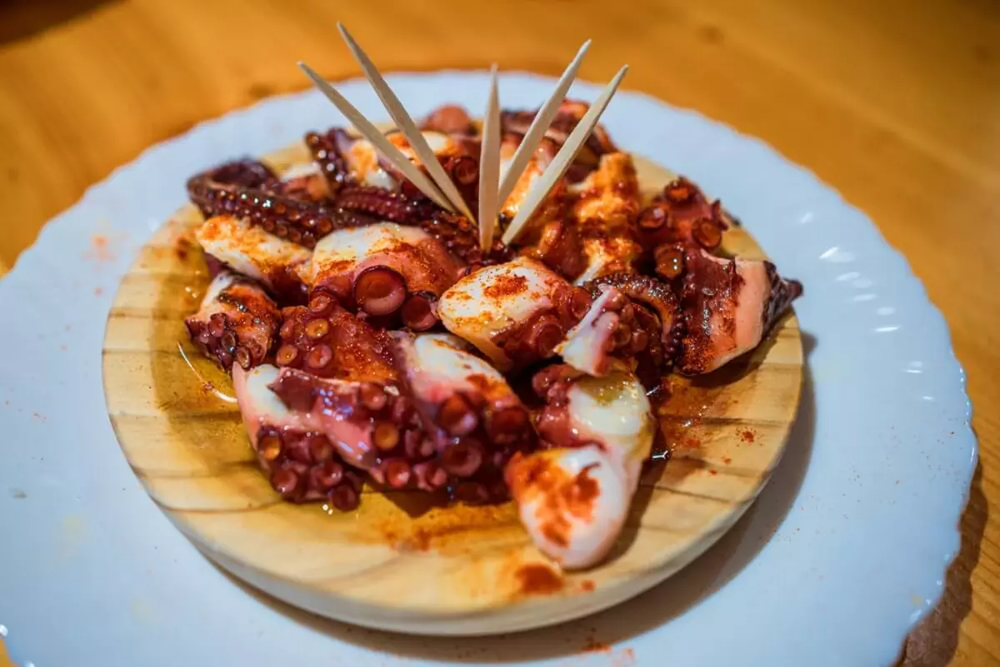
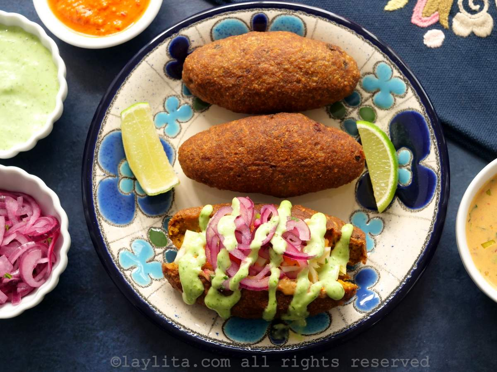

Bruschetta
Pan artesanal crujiente, ingredientes frescos y una combinación que equilibra rusticidad y sofisticación.
Pan artesanal crujiente, ingredientes frescos y una combinación que equilibra rusticidad y sofisticación.

Pulpo tierno, cocción milimétrica, aceite de oliva de perfil aromático y pimentón que aporta intensidad visual y gustativa.

Masa crujiente por fuera, corazón jugoso por dentro, relleno de pescado cuidadosamente sazonado que evoca tradición costera y autenticidad.